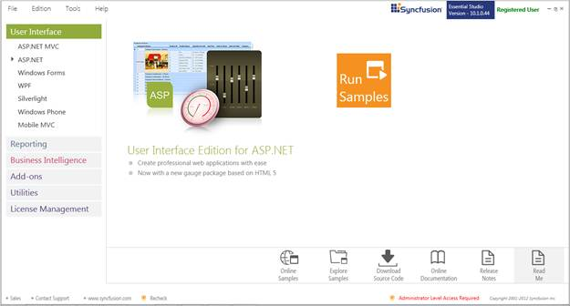
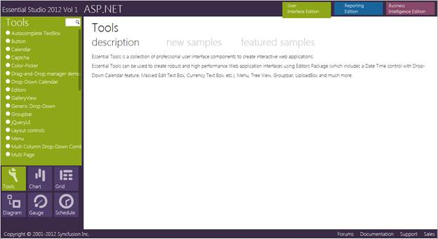

This section covers the location of the installed samples and describes the procedure to run the samples through the sample browser and online. It also provides the location of the source code.
Samples Installation Location
The Tools Web samples are installed in the following location, locally on the disk:
<Install Location>\Syncfusion\EssentialStudio\<Version Number>\Web\Tools.Web\Samples\3.5
Viewing Samples
To view the samples, follow the steps below:
1. Click Start-->All Programs-->Syncfusion-->Essential Studio <version number> -->Dashboard. Syncfusion Essential Studio Dashboard <version number> window is displayed.

Figure 2: Syncfusion Essential Studio Dashboard
2. In the Dashboard window, click Run Locally Installed Samples for ASP.NET under User Interface Edition panel. The ASP.NET Sample Browser window is displayed.
 Note: You can view the samples in any of the
following three ways:
Note: You can view the samples in any of the
following three ways:
· Run Locally Installed Samples-Click to view the locally installed samples.
· Run Online Samples-Click to view online samples.
· Explore Samples-Explore ASP.NET samples on disk.

Figure 3: Tools Samples Displayed in the ASP.NET Sample Browser
3. Select any Tools sample that is displayed on the left pane and browse through the features.
Source Code Location
The default location of the Tools Web source code is:
[System Drive]:\Program Files\Syncfusion\Essential Studio\[Version Number]\Web\Tools.Web\Src